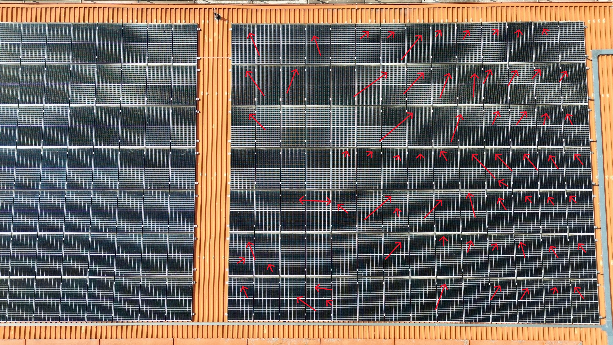

Technische Sichtprüfung
- Visuelle Kontrolle von Photovoltaikanlagen
- Dach- und Fassadeninspektion
- Erkennung von Verschmutzungen oder Schäden
- Unterstützung bei Wartungsentscheidungen
Weinrich Objektservice unterstützt Betreiber von Photovoltaikanlagen sowie Immobilienbesitzer mit einem klaren Schwerpunkt auf PV-Asset-Management und fundierter EEG-Beratung. Wir helfen dabei, den wirtschaftlichen Betrieb von Anlagen auch nach dem Auslaufen der Förderung zu sichern und kombinieren technische Betreuung mit praktischen Dienstleistungen wie Photovoltaik-Reinigung, Steinreinigung, Pflasterreinigung und Fassadenreinigung.
Ob Photovoltaikanlage, Fassade, Dach oder Steinfläche: Weinrich Objektservice verbindet technische Betreuung, fundierte EEG-Beratung und professionelle Reinigung zu einem ganzheitlichen Leistungsangebot.
Für Photovoltaikanlagen, Dächer und schwer zugängliche Bereiche setzen wir moderne Drohnentechnik ein. Hochauflösende 4K-Drohnenaufnahmen ermöglichen eine sichere Sichtprüfung sowie eine klare Vorher-/Nachher-Dokumentation der durchgeführten Arbeiten.



Der Fokus liegt auf der technischen und wirtschaftlichen Betreuung von Photovoltaikanlagen. Ergänzend bieten wir werterhaltende Reinigungsleistungen für Gebäude und Außenflächen an, damit Anlagen, Dächer und Immobilien langfristig in einem optimalen Zustand bleiben.
Ganzheitliche technische und wirtschaftliche Betreuung von Photovoltaikanlagen mit Fokus auf Leistung, Anlagenzustand und nachhaltigen Betrieb.
Ein zentraler Bestandteil unserer Arbeit ist die Beratung zu EEG ausgelaufen oder endet bald?, Photovoltaik nach EEG, EEG-Förderung ausgelaufen und Weiterbetrieb der PV-Anlage.
Ergänzend bieten wir professionelle Reinigungsleistungen für Photovoltaikanlagen, Dächer, Fassaden sowie Stein- und Pflasterflächen an. Die Ergebnisse werden auf Wunsch mit einer Vorher-/Nachher-Dokumentation durch 4K-Drohnenaufnahmen festgehalten.
Als PV-Asset-Manager unterstützt Weinrich Objektservice Betreiber bei der technischen Bewertung, Betreuung und Optimierung ihrer Photovoltaikanlagen.
Verlässliche Betreuung, saubere Dokumentation und ein klarer Ansprechpartner vor Ort – genau das schafft Vertrauen bei Betreibern, Eigentümern und Kunden.
Mit Leon Weinrich haben Sie einen direkten Ansprechpartner für Beratung, Dokumentation und Ausführung – ohne anonyme Vermittlung.
Vorher-/Nachher-Aufnahmen sowie Sichtprüfungen werden auf Wunsch mit hochauflösender Drohnentechnik erstellt und nachvollziehbar dokumentiert.
Von PV-Asset-Management und EEG-Beratung bis zur Photovoltaik-, Dach-, Fassaden- und Steinreinigung erhalten Sie eine durchgängige Betreuung.

Als Ansprechpartner unterstütze ich Betreiber von Photovoltaikanlagen sowie Immobilienbesitzer bei der technischen Bewertung, Reinigung und wirtschaftlichen Weiterführung ihrer Anlagen.
Weinrich Objektservice
Leon Weinrich
Sudetenstr. 2
97199 Ochsenfurt
Telefon: 0160 / 90248569
E-Mail: weinrichobjektservice@gmail.com